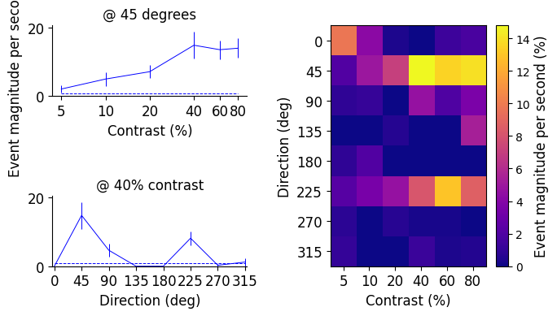

Compute and plot contrast tuning curves
Contents
Compute and plot contrast tuning curves#
This notebook uses the extracted event times to calculate the tuning of individual neurons to contrast X direction.#
import numpy as np
import pandas as pd
import matplotlib.pyplot as plt
import os
import pynwb
import warnings
from dandi.dandiapi import DandiAPIClient
savepath = 'data/'
Specify a session to analyze and load NWB file#
session_ID = 682746585
dandiset_id = '000039'
filepath = 'sub-661968859/sub-661968859_ses-682746585_behavior+ophys.nwb'
with DandiAPIClient() as client:
asset = client.get_dandiset(dandiset_id, 'draft').get_asset_by_path(filepath)
s3_url = asset.get_content_url(follow_redirects=1, strip_query=True)
Functions to load specific data assets from the nwb file#
def load_sweep_table(s3_url):
'''Creates a dataframe of the stimulus presentation table'''
with warnings.catch_warnings():
warnings.simplefilter("ignore")
with pynwb.NWBHDF5IO(s3_url, mode='r', load_namespaces=True, driver='ros3') as io:
nwbfile = io.read()
start_times = np.array(nwbfile.intervals['epochs']['start_time'].data)
stop_times = np.array(nwbfile.intervals['epochs']['stop_time'].data)
contrasts = np.array(nwbfile.intervals['epochs']['contrast'].data)
directions = np.array(nwbfile.intervals['epochs']['direction'].data)
SFs = np.array(nwbfile.intervals['epochs']['spatial_frequency'].data)
TFs = np.array(nwbfile.intervals['epochs']['temporal_frequency'].data)
df = pd.DataFrame(np.zeros((len(start_times),6)),columns=('Start','End','Contrast','Ori','SF','TF'))
df['Start'] = start_times
df['End'] = stop_times
df['Contrast'] = contrasts
df['Ori'] = directions
df['SF'] = SFs
df['TF'] = TFs
return df
sweep_table = load_sweep_table(s3_url)
sweep_table.head()
| Start | End | Contrast | Ori | SF | TF | |
|---|---|---|---|---|---|---|
| 0 | 194.0 | 254.0 | 0.05 | 270.0 | 0.04 | 1.0 |
| 1 | 284.0 | 344.0 | 0.05 | 270.0 | 0.04 | 1.0 |
| 2 | 375.0 | 435.0 | 0.10 | 45.0 | 0.04 | 1.0 |
| 3 | 465.0 | 525.0 | 0.80 | 0.0 | 0.04 | 1.0 |
| 4 | 556.0 | 616.0 | 0.60 | 135.0 | 0.04 | 1.0 |
This dataframe describes the stimulus presentation trials. The Start and End times are given in imaging frames (at 30 frames/sec). So you can see each trial has a duration of 2 seconds, with 1 second between trials, when mean luminance gray is presented. There are 8 directions (“Ori”) of gratings and 6 Contrasts, and there are blanksweeps interleaved when Contrast, Ori, SF, TF are all NaN.
def grating_params(sweep_table):
'''Extracts the grating parameters from the stimulus presentation table'''
directions = np.sort(sweep_table.Ori.dropna().unique()).astype(int)
contrasts = np.sort(sweep_table.Contrast.dropna().unique())
return directions, contrasts
def load_mean_sweep_events(s3_url, savepath):
'''Computes (or loads if already saved) an array of the mean events per neuron during each stimulus presentation'''
if os.path.isfile(os.path.join(savepath, str(session_ID)+'_mean_sweep_events.npy')):
mse = np.load(os.path.join(savepath, str(session_ID)+'_mean_sweep_events.npy'))
else:
with warnings.catch_warnings():
warnings.simplefilter("ignore")
with pynwb.NWBHDF5IO(s3_url, mode='r', load_namespaces=True, driver='ros3') as io:
nwbfile = io.read()
events = np.array(nwbfile.processing['brain_observatory_pipeline']['l0_events']['true_false_events'].data)
sweep_table = load_sweep_table(s3_url)
num_neurons = np.shape(events)[1]
num_sweeps = len(sweep_table)
mse = np.zeros((num_sweeps,num_neurons))
for sweep in range(num_sweeps):
start_frame = int(sweep_table['Start'][sweep])
end_frame = int(sweep_table['End'][sweep])
mse[sweep] = np.mean(events[start_frame:end_frame,:],axis=0)
os.makedirs(savepath, exist_ok=True)
np.save(os.path.join(savepath, str(session_ID)+'_mean_sweep_events.npy'),mse)
return mse
Functions to compute tuning curve and identify peak conditions for all neurons in session#
def compute_mean_condition_responses(sweep_table, mean_sweep_events):
'''Computes the mean response and SEM to each stimulus condition (i.e. each direction/contrast combination)
and for the blank sweeps (contrast=0)'''
(num_sweeps,num_cells) = np.shape(mean_sweep_events)
directions, contrasts = grating_params(sweep_table)
condition_responses = np.zeros((num_cells,len(directions),len(contrasts)))
condition_sem = np.zeros((num_cells,len(directions),len(contrasts)))
for i_dir,direction in enumerate(directions):
is_direction = sweep_table['Ori'] == direction
for i_con,contrast in enumerate(contrasts):
is_contrast = sweep_table['Contrast'] == contrast
is_condition = (is_direction & is_contrast).values
condition_responses[:,i_dir,i_con] = np.mean(mean_sweep_events[is_condition],axis=0)
condition_sem[:,i_dir,i_con] = np.std(mean_sweep_events[is_condition],axis=0)/np.sqrt(float(is_condition.sum()))
is_blank = np.isnan(sweep_table['Ori'].values)
blank_sweep_responses = np.mean(mean_sweep_events[is_blank],axis=0)
blank_sweep_sem = np.std(mean_sweep_events[is_blank],axis=0)/np.sqrt(float(is_blank.sum()))
return condition_responses, condition_sem, blank_sweep_responses, blank_sweep_sem
def get_peak_conditions(condition_responses):
(num_cells,num_directions,num_contrasts) = np.shape(condition_responses)
peak_direction = np.zeros((num_cells,),dtype=np.uint8)
peak_contrast = np.zeros((num_cells,),dtype=np.uint8)
for nc in range(num_cells):
cell_max = np.nanmax(condition_responses[nc])
is_max = condition_responses[nc] == cell_max
if is_max.sum()==1:
(direction,contrast) = np.argwhere(is_max)[0,:]
else:
print(str(is_max.sum())+' peaks')
r = np.random.choice(is_max.sum())
(direction,contrast) = np.argwhere(is_max)
print(np.shape(direction))
direction = direction[r]
contrast = contrast[r]
peak_direction[nc] = direction
peak_contrast[nc] = contrast
return peak_direction, peak_contrast
Plot tuning curve for one cell#
def plot_single_cell_tuning_curves(savepath,example_cell):
mse = 3000.0*load_mean_sweep_events(s3_url, savepath)
sweep_table = load_sweep_table(s3_url)
directions, contrasts = grating_params(sweep_table)
condition_resp, condition_SEM, blank_responses, _ = compute_mean_condition_responses(sweep_table,mse)
#shift zero to center:
# directions = [-135,-90,-45,0,45,90,135,180]
# condition_resp = cu.center_direction_zero(condition_responses)
# condition_SEM = cu.center_direction_zero(condition_SEM)
#full direction by contrast response heatmap
plt.figure(figsize=(7,4))
ax = plt.subplot2grid((5,5),(0,3),rowspan=5,colspan=2)
im = ax.imshow(condition_resp[example_cell],vmin=0.0,interpolation='nearest',aspect='auto',cmap='plasma')
ax.set_ylabel('Direction (deg)',fontsize=12)
ax.set_xlabel('Contrast (%)',fontsize=12)
ax.set_xticks(np.arange(len(contrasts)))
ax.set_xticklabels([str(int(100*x)) for x in contrasts],fontsize=12)
ax.set_yticks(np.arange(len(directions)))
ax.set_yticklabels([str(x) for x in directions],fontsize=12)
cbar = plt.colorbar(im,ax=ax)
cbar.set_label('Event magnitude per second (%)',fontsize=12)
peak_dir_idx, peak_con_idx = get_peak_conditions(condition_resp)
#contrast tuning at peak direction
contrast_means = condition_resp[example_cell,peak_dir_idx[example_cell],:]
contrast_SEMs = condition_SEM[example_cell,peak_dir_idx[example_cell],:]
y_max = 1.1*np.max(contrast_means+contrast_SEMs)
ax = plt.subplot2grid((5,5),(0,0),rowspan=2,colspan=2)
ax.errorbar(np.log(contrasts),contrast_means,contrast_SEMs,linewidth=0.7,color='b')
ax.plot([np.log(contrasts[0]),np.log(contrasts[-1])],[blank_responses[example_cell],blank_responses[example_cell]],linewidth=0.7,linestyle='--',color='b')
ax.set_xticks(np.log(contrasts))
ax.set_xticklabels([str(int(100*x)) for x in contrasts],fontsize=12)
ax.tick_params(axis='y',labelsize=12)
ax.set_xlabel('Contrast (%)',fontsize=12)
ax.set_ylabel('Event magnitude per second (%) ',fontsize=12)
ax.set_ylim([0,y_max])
ax.spines['right'].set_visible(False)
ax.spines['top'].set_visible(False)
ax.set_title('@ '+str(directions[peak_dir_idx[example_cell]])+' degrees',fontsize=12)
#direction tuning at peak contrast
direction_means = condition_resp[example_cell,:,peak_con_idx[example_cell]]
direction_SEMs = condition_SEM[example_cell,:,peak_con_idx[example_cell]]
ax = plt.subplot2grid((5,5),(3,0),rowspan=2,colspan=2)
ax.errorbar(np.arange(len(directions)),direction_means,direction_SEMs,linewidth=0.7,color='b')
ax.plot([0,len(directions)-1],[blank_responses[example_cell],blank_responses[example_cell]],linestyle='--',color='b',linewidth=0.7)
ax.set_xlim(-0.07,7.07)
ax.set_xticks(np.arange(len(directions)))
ax.set_xticklabels([str(x) for x in directions],fontsize=12)
ax.tick_params(axis='y',labelsize=12)
ax.set_xlabel('Direction (deg)',fontsize=12)
#ax.set_ylabel('Response',fontsize=14)
ax.set_ylim([0,y_max])
ax.spines['right'].set_visible(False)
ax.spines['top'].set_visible(False)
ax.set_title('@ '+str(int(100*contrasts[peak_con_idx[example_cell]]))+'% contrast',fontsize=12)
plt.tight_layout(w_pad=-5.5, h_pad=0.1)
os.makedirs('figures', exist_ok=True)
plt.savefig(os.path.join('figures',str(session_ID)+'_cell_'+str(example_cell)+'_tuning_curves.png'),dpi=300)
plt.show()
plt.close()
plot_single_cell_tuning_curves(savepath, 6)
